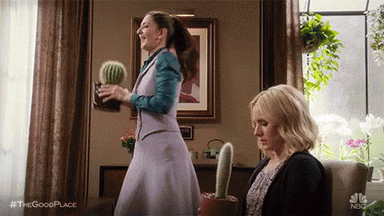
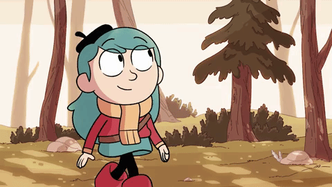
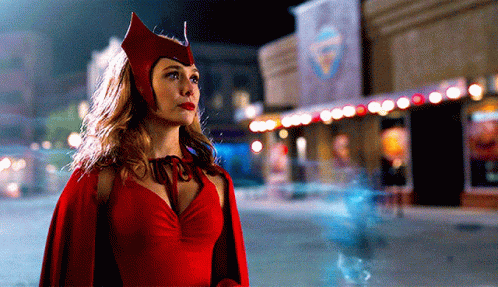
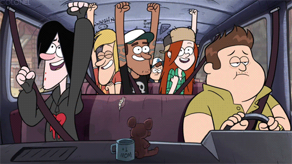
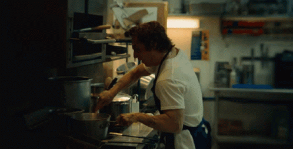
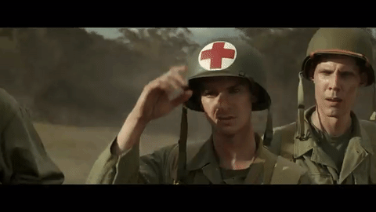
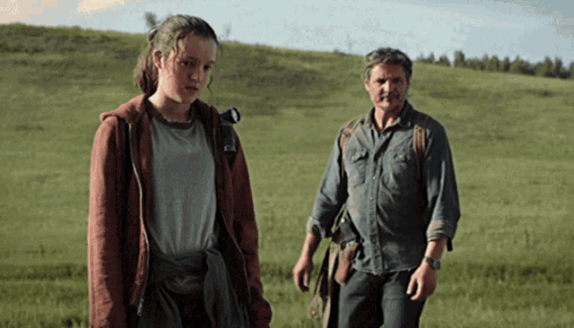
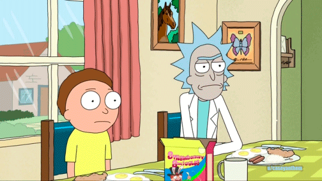

Netflix
A Netflix é uma plaforma muito conceituada no mundo streaming. Ela foi a pioneira nesse quesito, já que antes dela ainda se usavam DVD's e locadoras. A ideia era reunir em uma só plataforma filmes, desenhos, séries e novelas populares entre a população. Atualmente, a Netflix produz conteúdos autorais de variados gêneros, entre os mais renomados estão: Bird Box, Stranger Things e Bridgerton.
Recomendações
Filme
Alerta Vermelho
Um alerta vermelho da Interpol é emitido e o agente do FBI John Hartley assume o caso. Durante sua busca, ele se vê diante de um assalto ousado e é forçado a se aliar ao maior ladrão de arte da história, Nolan Booth, para capturar a ladra de arte mais procurada do mundo atualmente, Sarah Black.
Gênero - Comédia, Ação, Suspense, Crime
Classificação indicativa 12 anos, contém violência, drogas lícitas e linguagem imprópria.
Série
The Good Place
Eleanor Shellstrop está morta. Acontece que, após sua partida, ela foi enviada ao "Bom Lugar", um lugar de eterna felicidade destinado às pessoas que fizeram o bem durante suas vidas. Mas tudo isso não passa de um acidente: Eleanor não merece estar lá. E agora, será que ela vai conseguir esconder a verdade ou será eventualmente enviada ao "Bad Place"?
Gênero - Comédia, Fantasia, Ficção, Romance filosófico
Classificação indicativa 16 anos, contém violência e linguagem imprópria.
Desenho
Hilda
Ao sair da floresta onde vive e ir para a cidade, a destemida Hilda vive aventuras incríveis com os novos amigos e criaturas mágicas que encontra pelo caminho.
Gênero - Comédia, Fantasia, Ficção, Sobrenatural
Classificação indicativa Livre para todos os públicos
Animação
Disney+
O Disney+ é conhecido por ser o lar exclusivo de conteúdos produzidos pela Disney, bem como por suas subsidiárias, como a Pixar, Marvel, Lucasfilm (responsável por Star Wars) e National Geographic. Isso significa que os assinantes podem desfrutar de filmes populares, como as sagas de Star Wars e Marvel, animações clássicas da Disney, como O Rei Leão e A Bela e a Fera, e séries originais que expandem os universos dessas franquias.
Recomendações
Filme
Cruella

Inteligente, criativa e determinada, Estella quer fazer um nome para si através de seus designs e acaba chamando a atenção da Baronesa Von Hellman. Entretanto, o relacionamento delas desencadeia um curso de eventos e revelações que fazem com que Estella abrace seu lado rebelde e se torne a Cruella, uma pessoa má, elegante e voltada para a vingança.
Gênero - Comédia, Ação, Crime
Classificação indicativa 12 anos, contém violência e linguagem imprópria.
Série
WandaVision
Wanda Maximoff após retornar da extinção de Thanos vive a dor do luto pela morte de Visão. Em um momento de intensa tristeza e luto, vivendo vidas suburbanas perfeitas, Wanda começa a suspeitar que nem tudo é o que parece.
Gênero - Comédia, Fantasia, Ficção, Ação, Mistério
Classificação Indicativa 12 anos, contém violência e linguagem imprópria.
Desenho
Gravity Falls
Os gêmeos Dipper e Mabel Pines passam as férias com o tio-avô numa misteriosa cidade. Eles tentam se adaptar à estranha região, mas sentem algo estranho e começam a investigar. Dipper encontra um diário codificado e a aventura começa.
Gênero - Comédia, Fantasia, Mistério, Sobrenatural
Classificação indicativa Livre para todos os públicos
Animação
Star+
Ao contrário do Disney+, que é focado em conteúdos familiares e para todas as idades, o Star+ oferece uma variedade de programação voltada para adultos, com uma seleção diversificada de filmes, séries como The Walking Dead, Gray's Anatomy, programas de TV e esportes ao vivo. O serviço inclui conteúdos de diversas marcas e canais, como ABC, FX, Freeform, Searchlight Pictures, ESPN e outros.
Recomendações
Filme
Deadpool
Wade Wilson é um ex-agente especial que passou a trabalhar como mercenário. Seu mundo é destruído quando um cientista maligno o tortura e o desfigura completamente. O experimento brutal transforma Wade em Deadpool, que ganha poderes especiais de cura e uma força aprimorada. Com a ajuda de aliados poderosos e um senso de humor mais desbocado e cínico do que nunca, o irreverente anti-herói usa habilidades e métodos violentos para se vingar do homem que quase acabou com a sua vida.
Gênero - Comédia, Ação, Romance, Aventura
Classificação indicativa 16 anos, contém violência, cenas sexuais, linguagem imprópria
Série
The Bear
Carmy luta para transformar a lanchonete da família e a si mesmo enquanto trabalha ao lado de uma equipe rude e difícil que acaba se revelando como sua família escolhida.
Gênero - Comédia Dramática
Classificação Indicativa 16 anos, contém violência e linguagem imprópria.
Desenho
Os Simpsons
Esta comédia animada de enorme sucesso gira em torno da família de mesmo nome que mora na cidade de Springfield, em um estado americano sem nome. O pai, Homer, não é um típico homem de família. Empregado de uma usina nuclear, ele faz o melhor para comandar sua família, mas frequentemente se vê comandado. A família inclui ainda a carinhosa mãe de cabelo azul Marge, o filho encrenqueiro Bart, a talentosa filha Lisa e a bebê Maggie.
Gênero - Comédia
Classificação indicativa: 14 anos, contém apologia ao sexo, drogas e linguagem imprópria
Animação
HBO Max
O destaque do HBO Max é a extensa coleção de conteúdos da HBO, que inclui séries aclamadas como Game of Thrones, Westworld, The Last of Us e Chernobyl, além de uma ampla seleção de filmes e documentários. Além disso, o serviço apresenta uma variedade de programas de outros canais e marcas da WarnerMedia, como DC Comics, Warner Bros., Cartoon Network, Adult Swim (Criadora de Rick and Morty) e CNN.
Recomendações
Filme
Até o último homem
Acompanhe a história de Desmond T. Doss, um médico do exército americano que, durante a Segunda Guerra Mundial, se recusa a pegar em armas. Durante a Batalha de Okinawa ele trabalha na ala médica e salva cerca de 75 homens.
Gênero - Guerra, Drama, Ficção Histórica
Classificação indicativa 16 anos, contém violência
Série
The Last of Us
Joel, um sobrevivente duro e cínico, e a jovem e impetuosa Ellie se conectam pela dificuldade do mundo em que vivem. Juntos, eles enfrentam circunstâncias brutais e monstros impiedosos durante uma difícil jornada pelos EUA após um surto apocalíptico.
Gênero - Aventura, Ação, Ficção Científica
Classificação Indicativa 16 anos, contém violência, cenas sexuais e linguagem imprópria.
Desenho
Rick and Morty
Acompanhe malucas viagens no tempo-espaço e por universos paralelos com Rick, um cientista com problemas com a bebida, e seu neto Morty, um adolescente não tão brilhante quanto o avô.
Gênero - Comédia
Classificação indicativa: 16 anos, contém apologia ao sexo, drogas e linguagem imprópria